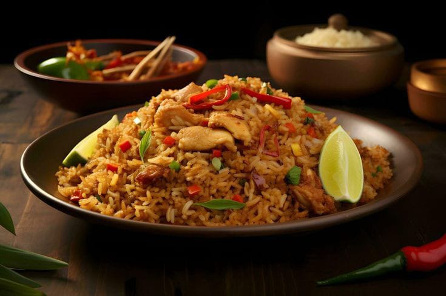

Materials:
- 1 plate of cooked white rice (preferably cold)
- 1 egg
- 2 cloves of garlic (minced)
- 2 shallots (minced)
- 2 tablespoons of sweet soy sauce
- ½ tablespoon of oyster sauce (optional)
- ½ teaspoon of salt
- ½ teaspoon of ground pepper
- ½ teaspoon of chicken powder (optional)
- 1 tablespoon of cooking oil
- 3 meatballs (thinly sliced)
- 2 shrimps (peeled)
- 1 scallion (thinly sliced)
- Crackers and pickles for serving
Steps:
- First, heat the cooking oil in a wok or large frying pan over medium heat.
- Then, sauté the minced garlic and shallots until fragrant. Stir continuously to avoid burning.
- Next, add the sliced meatballs or shrimp, if you're using them. Cook until they are cooked.
- Move the sautéed ingredients to the side of the wok. Crack the egg into the empty space and scramble it until it's cooked.
- After that, add the cooked rice to the wok. Mix all of the ingredients together thoroughly.
- Now, pour in the sweet soy sauce, oyster sauce (if using), salt, ground pepper, and chicken powder (if using).
- Stir everything well until the rice changes color and the spices are evenly distributed.
- Remove the fried rice from the wok and sprinkle with thinly sliced scallions.
- Serve the fried rice with a fried egg, crackers, and pickles for a complete meal.